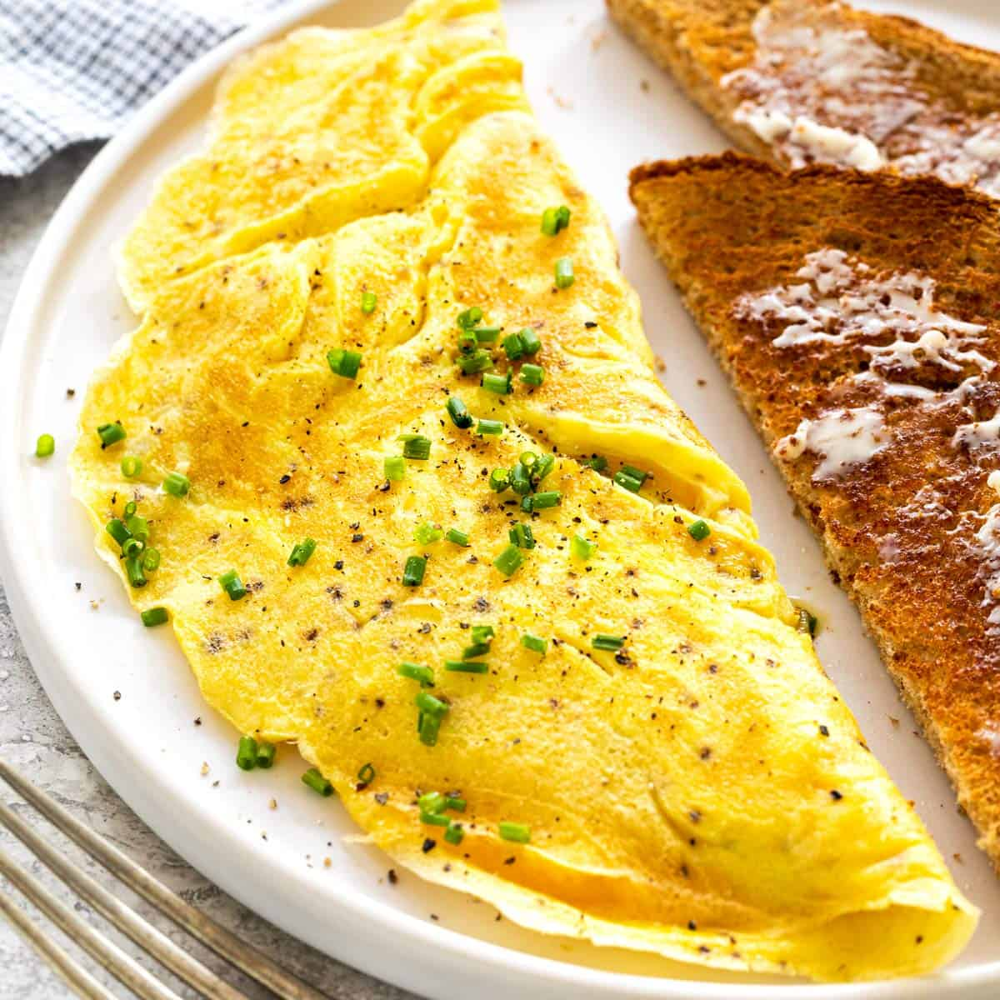

Cheese Omelette

Description
A filling side dish or as a stand alone, you're sure to love this CHEESY OMELETTE.
2 XL sized eggs and a fist full of shredded cheese is kinda the
way to go when it comes to a fulfilling omelette. Any seasonings you want
and you are half way there!
Ingredients
- 2 XL Eggs
- Seasoning of choice
- 1 Cup of shredded cheese
- Non-stick cooking spray
Steps
- Pre-heat pan to a medium-high heat.
- Apply cooking spray while pan is pre-heating.
- Crack eggs into pre-heated pan and scramble gently with a spatula.
- Season once eggs settle and cook a little. Pale yellow color.
- Place your cheese all around the eggs surface.
- Cook until egg is a little runny on the top.
- Use your spatula to fold the now flat circular egg in half.
- Cook on one side 2mins and season, then flip.
- ENJOY!
Odin Recipes